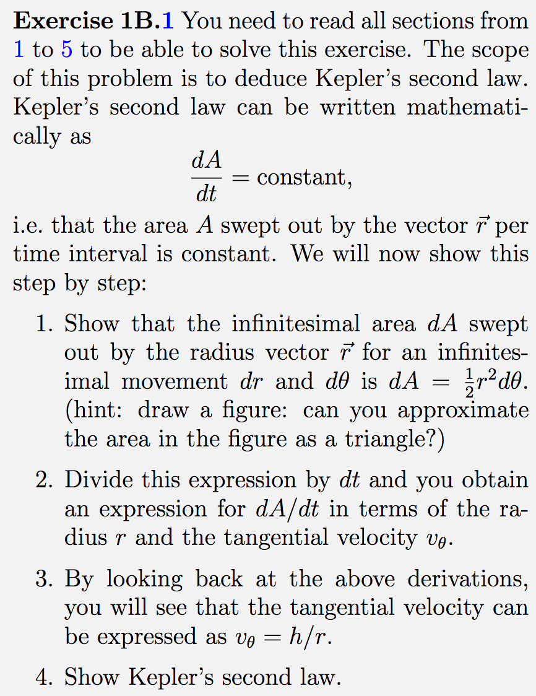
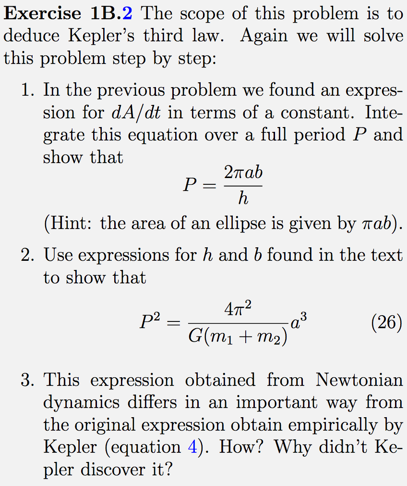
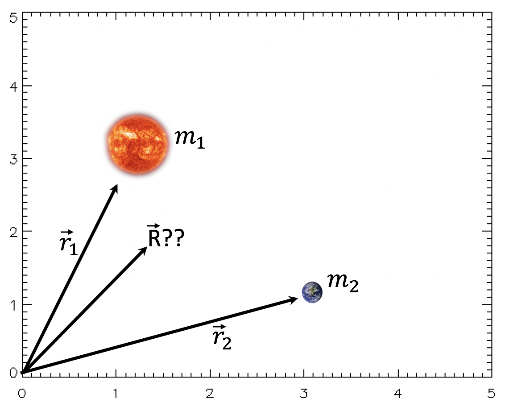
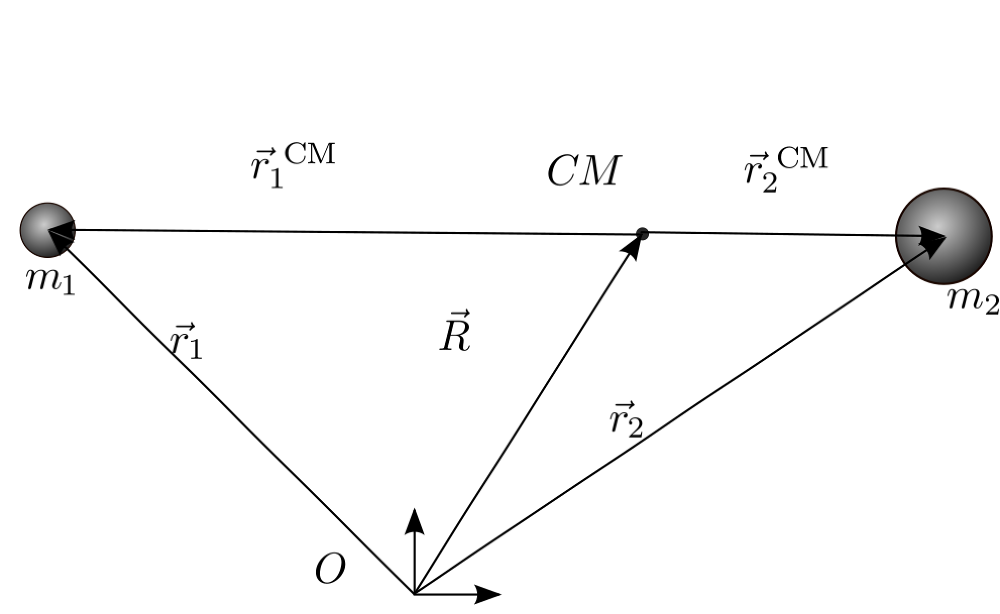
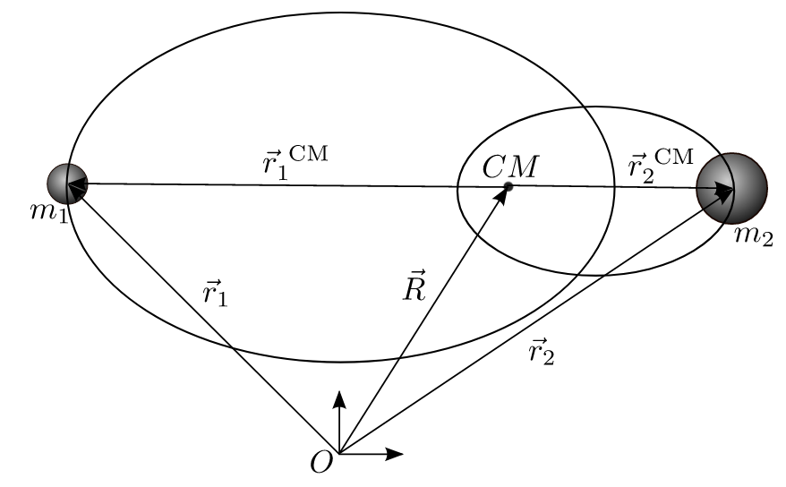
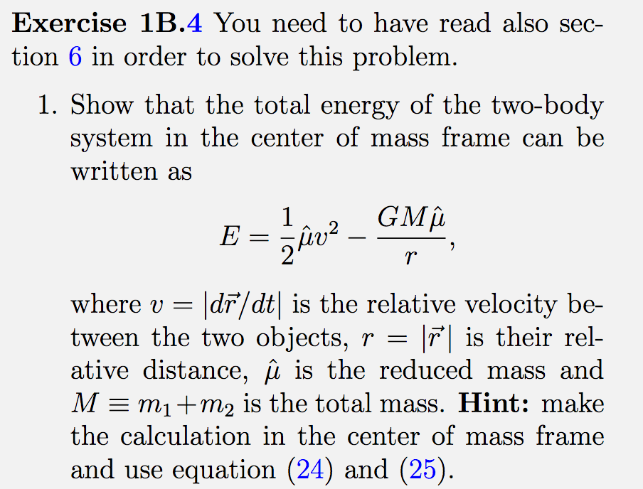
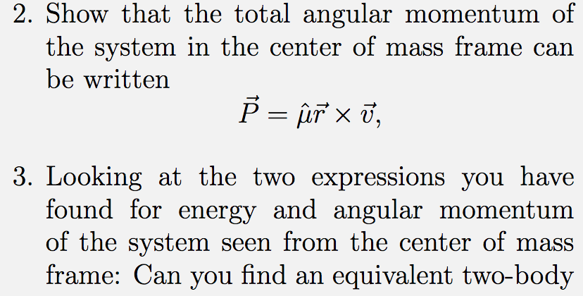
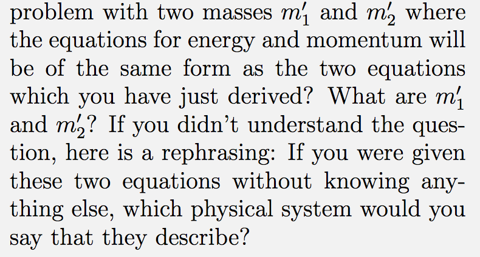
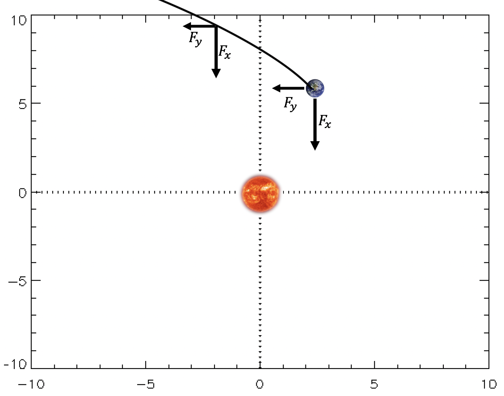

Du må bruke presentasjonsmodus/fullskjermsvisning for å lese denne, men du skal ikke bruke frem/tilbake-knappene, KUN knappene som dukker opp på sliden for å ta deg videre! Ofte må du laste filen ned til maskinen din og åpne den der for å få til dette. Merk at noen knapper vil åpne nettskjema, videoer eller andre ressurser i internettbrowseren din. Når du gjør det riktig, skal du kun se en side av gangen, og når du trykker på knappene som dukker opp på skjermen så skal disse ta deg frem/tilbake i dokumentet. Du vil miste mye læringsutbytte hvis du ser flere slides av gangen. Får du det ikke til, spør foreleser/gruppelærer!
Dette er en erstatning for forelesningen i emnet. Har du gått skikkelig gjennom disse interaktive forelesningsnotatene så trenger du ikke å lese de fulle forelesningsnotatene (med unntak av oppgavene bak). All informasjonen du trenger, får du her. Du kommer til å få mange grublespørsmål og diskusjonsoppgaver, det er meningen at disse skal gjøres i grupper av minst 2, maks 4 studenter. Det er defor sterkt anbefalt at dere sitter sammen i grupper når dere går gjennom disse interaktive forelesningsnotatene, du vil få betydelig mer utbytte av dem på den måten. En god ide kan være å bli enige om å treffes til den faste forelesningstiden og bruke forelesningslokalet som kommer til å være resevert til dette. Hvis du har kommentarer ris/ros til disse forelesningsnotatene eller til emnet, trykk på 🙂 🙁 knappen som du finner på alle sider.
Forrige side Velkommen til andre forelesning i del 1B! Til høyre er det noen punkter til repetisjon. Kun når du har full kontroll på alt dette kan du gå videre. Hvis ikke, gå tilbake til forrige forelesning for å repetere litt eller spør foreleser og/eller gruppelærer hvis det er ting som er uklare. Er du klar?Neste side
Kan du prøve å tenke gjennom hvordan du ville utledet tolegemeproblemet hvis du skal gjøre det igjen uten hjelp av forelesningsnotater? Du trenger ikke å gjøre alle stegene i detalj, men tenke gjennom, steg for steg, hva vi gjorde. Hvis du er usikker på noen av stegene kikk tilbake.
Klarer du å bruke Newtons lover på vektorform, inkludert derivasjoner og bruk av enhetsvektorer i polarkoordinater?
Kjenner du til alle begrepene og egenskapene til ellipser som du skal kjenne i kurset?
Forrige side🙂 🙁Repetisjon
Vi utledet at løsningen av tolegemeproblemet kan skrives som: $$r(f)=\frac{p}{1-e\cos{f}}$$ der p og e er positive integrasjonskontstanter. Hvis e < 1 så er dette formelen for en ellipse: $$r(f)=\frac{a(1-e^2)}{1-e\cos{f}}$$ der det ene objektet er i brennpunktet: Neste side
Forrige side🙂 🙁Repetisjon Men det store spørsmålet i forrige forelesning var: Hva hvis e ≥ 1???? Da har vi ikke lenger en ellipsebane... Men hva har vi da...???Neste side
Forrige side🙂 🙁Kjeglesnitt
Likningen vi har kommet frem til er tilfeldigvis likningen for kjeglesnitt (conic sections) i polarkoordinater. Vet du hvilke 3 typer kurver som inngår i kjeglesnittene? Den ene er ellipser ja, men de andre to? Trykk her når du har funnet ut av det
De sorte linjene er ellipser, den blå er en parabel mens den røde og grønne er hyperbler. Den sorte prikkete ellipsen har e = 0 og er dermed en sirkel. Den heltrukne sorte linja er en ellipse med eksentrisitet e = 0.7. Den sorte prikken er brennpunktet i sirkelen (og dermed sentrum siden det er sirkel), den oransje prikken er brennpunktet i ellipsen. Neste side
Hyperbler og parabler har også formel $$r(f)=\frac{p}{1-e\cos{f}}$$ men for
parabler er e = 1 og p = 2a
hyperbler er e > 1 og p = − a(1−e2)
mens vi husker at ellipser hadde e < 1 og p = a(1−e2)
Merk at for ellipser og hyperbler så er det kun et minustegn som skiller uttrykket for p. Årsaken til minustegnet er for å holde p positiv (r må jo være en positiv størrelse) når e plutselig har blitt større enn 1. I figuren til venstre så har alle kurvene a = 5 mens de to hyperblene har e = 2 (rød) og e = 2.8 (grønn). Neste side
Forrige side🙂 🙁Kjeglesnitt Så ja, Kepler fant faktisk ikke hele sannheten! Hvorfor ikke?
Fordi, som du ser fra figuren, objekter som går i parabelbaner og hyperbelbaner ikke er bundet til sola, de kommer bare innom men aldri tilbake igjen!
Slike objekter vil dermed ikke være fra vårt solsystem men være besøk fra det interstellar rom. Neste side
Forrige side🙂 🙁Kjeglesnitt Det er først nå i det siste at man har oppdaget slike objekter. Det aller første ble oppdaget i 2017 og ble kalt Oumuamua. Her er en kunstrisk fremstilling av hvordan objektet kan se ut (credit: ESO/M. Kornmesser) Neste side
Forrige side🙂 🙁Kjeglesnitt
Vi skal snart se litt på hva betingelsene er for at et objekt får en elliptisk, parabel eller hyperbelbane. Dette er jo spesielt viktig for satelitter. Hvis vi ønsker å ha en satelitt i bane rundt jorda så bør vi helst sørge for at den går i en ellipsebane. Ellers vil vi jo miste satelitten! Men før vi gjør det la oss kikke litt på ukeoppgavene.
Vi har her utledet Keplers 1.lov. Men hva med Keplers 2. og 3. lov? De skal du få lov til å utlede selv i oppgave 1B.1 og 1B.2. Neste side
Forrige side🙂 🙁Keplers 2. og 3.lov
Keplers 2. og 3.lov
Tenk gjennom hvordan du kan gå frem for å løse oppgave 1B.1 på høyre side her (prosjektstudenter har en liknende oppgave i utfording B1, del 2): Etter at du har tenkte nøye, ta gjerne en titt på denne videoen for noen tips. Merk at det ikke er meningen at du skal løse oppgaven nå men finne din egen ide om hvordan du ville startet på hver av deloppgavene. Ikke se på videoen før du har egne forslag.  Neste side
Forrige side🙂 🙁Keplers 2. og 3.lov
Keplers 2. og 3.lov
Tenk gjennom hvordan du kan gå frem for å løse deloppgave 1 og 3 fra oppgave 1B.2 på høyre side her (prosjektstudenter har en liknende oppgave i utfording B1, del 2): Etter at du har tenkte nøye, ta gjerne en titt på denne videoen for noen tips. Merk at det ikke er meningen at du skal løse oppgaven nå men finne din egen ide om hvordan du ville startet på hver av deloppgavene. Ikke se på videoen før du har egne forslag.  Neste side
Forrige side🙂 🙁Keplers 2. og 3.lov
Spesielt den siste oppgaven her er svært viktig!
Keplers 3.lov Du utledet i oppgaven at Keplers versjon av sin 3.lov er noe gal. Det er svært viktig å bruke den riktige formelen i alt som vi gjør i dette kurset her. Den riktige formelen (som også er i SI-enheter) er gitt ved $$P^2=\frac{4\pi^2}{G(m_1+m_2)}a^3$$ Vi ser at begge massene er med på å bestemme forholdet mellom omløpsperiode og store halvakse i en ellipsebane!
Forrige side🙂 🙁Keplers 2. og 3.lov
Før vi går videre, ta en nøye titt på første deloppgave av oppgave 1B.3: Neste side
Forrige side🙂 🙁2-legemeproblemet igjen
Men stopp en hal! Har vi egentlig løst 2-legemeproblemet? Vi har løst problemet i tilfellet hvor vi setter oss på m1 og ser på bevegelsen til m2 som da blir en ellipsebane med m1 i det ene brennpunktet. Men hva hvis vi setter oss på m2? Likningene vi får blir jo de samme, så løsningen blir den samme med massene byttet om, m2 står i et brennpunkt til ellipsebanen som m1 følger. Men hva hvis vi nå befinner oss et punkt langt vekk og ser legemene på avstand mens vi ikke befinner oss i referansesystemet til noen av dem? Hvordan vil da m1 og m2 bevege seg?
Tenk deg godt om før du går til neste side... Neste side
Forrige side🙂 🙁Massesenter For å finne svaret, må vi repetere et uttrykk som du allerede kjenner: massesenter.

Hvis vi kjenner posisjonene $\vec{r_1}$ og $\vec{r_2}$ på figuren, hvordan kan vi da finne posisjonen R⃗ til massesenteret? Du kan bruke massene m1 og m2. Hva er formelen? Trykk her når du har frisket opp massesenterdefinisjonen!
Forrige side🙂 🙁Massesenter
Stemmer! Vi må rett og slett ta midlet mellom de to posisjonene, vektet med massene: $$\vec{R}=\frac{m_1\vec{r_1}+m_2\vec{r_2}}{m_1+m_2}$$ Men hva hvis vi nå skal finne massesenteret R⃗ til en galakse og vi kjenner posisjonene $\vec{r_i}$ til alle N stjernene med masse mi i galaksen? (anta at det ikke finnes annen masse i galaksen). Hvordan kan vi generalisere uttrykket vårt?? Diskuter og trykk her når du har funnet ut av det
$$\vec{R}=\frac{1}{M}\sum_{i=1}^Nm_i\vec{r_i}$$ Her er M summen over alle massene. Pass på at du har denne friskt i minne videre... Neste side
Forrige side🙂 🙁Massesenter
For å kunne finne bevegelsen til både m1 og m2 skal vi nå utlede en utvidelse av Newtons 2.lov som gjelder for et mangelegemesystem. Anta igjen at vi har galaksen vår med N stjerner og at det mellom disse kun virker gravitasjonskrefter $\vec{f_{ij}}$ (krafta på legeme i fra legeme j). I tillegg kan det virke en ekstern kraft F⃗ext som virker likt på hele systemet, dvs. på alle objektene, f.eks. en annen galakse som trekker på galaksen. I denne videoen blir du satt igang med utledningen av Newtons 2.lov på mangelegemesystemer.
Etter å ha sett videoen skal du nå se om du kan komme frem til et uttrykk av typen: F⃗ = ΣΣf⃗ + F⃗ext = Σmr⃗ og sett inn riktige indekser på krefter, masser, posisjonsvektorer og tidsderiverte. Pass spesielt på at summegrensene blir riktige! Neste side
Forrige side🙂 🙁Massesenter Vi skal nå forenkle dette uttrykket: Ved å bruke
en av Newtons lover som sier noe om krefter som er lik hverandre, dette skal gi deg at et av leddene er 0
skal du vise at $$\vec{F}_\mathrm{ext}=M\ddot{\vec{R}}$$ som er Newtons 2.lov for mangelegemesystemer. Fikk du det til?
Hvis du er usikker, se på denne videoen .
Før du går til neste side, prøv å si til hverandre med ord hva denne likningen sier. Ser du hva essensen er? Neste side
Forrige side🙂 🙁2-legemeproblem sett fra massesenter
Hva hvis de eksterne kreftene på systemet er null?
Da er $\ddot{\vec{R}}=0$ og massesenteret har ingen akselerasjon! Massesenteret vil da kun bevege seg med konstant hastighet. Vi kan da dele bevegelsen til en stjerne i galaksen opp i
bevegelsen til stjerna i forhold til massesenteret PLUSS
bevegelsen til massesenteret
Hvis det ikke er noen ytre krefter så vil massesenterbevegelsen være enkel, konstant hastighet. Da trenger vi kun å finne bevegelsen til stjerna om massesenteret. Dette hjelper oss med tolegemeproblemet vårt: vi trenger dermed kun å finne bevegelsen til de to legemene omkring deres felles massesenter.Neste side
Forrige side🙂 🙁2-legemeproblem sett fra massesenter
Her har vi situasjonen:

Fra et gitt origo O utenfor systemet så har vi poisjonsvektorene $\vec{r_1}$ og $\vec{r_2}$ som peker på de to legemene, samt R⃗ som peker på massesenteret (CM, Center of Mass) til de to legemene. Vi er interessert i disse legemenes bevegelse i forhold til massesenteret (se forrige side hvis du er usikker på hvorfor!). Da velger vi å flytte origo til massesenteret. Dette nye koordinatsystemet kaller vi massesentersystemet. Posisjonsvektorene $\vec{r_1}^{CM}$ og $\vec{r_2}^{CM}$ fra det nye origo er tegnet inn i figuren. Men hva med R⃗CM. Hva er posisjonsvektoren til massesemnteret fra dette nye origo?
Diskuter og tenk deg nøye om før du ser på svaret på neste side. Svaret er kanskje enklere enn du tror... Neste side
Forrige side🙂 🙁2-legemeproblem sett fra massesenter
Siden poisjonen til massesenteret i massesenteret er i origo selv: R⃗CM = 0!
Nå til litt regning. Finn frem papir og blyant og forbered deg på å leke litt med likninger (ikke mye, gjør du det riktig så er dette fort gjort).
Legemenes bevegelse om massesenteret Bruk nå massesentersystemet (sjekk forrige side hvis du har glemt ...), og sett inn i definisjonen av massesenteret for R⃗. Gjør følgende substitusjoner: $$\vec{r} = \vec{r_2} - \vec{r_1}\ \ \ \mathrm{og}\ \ \ \hat\mu = \frac{m_1m_2}{m_1+m_2}$$ MERK at vi har fjernet CM fra symbolene, i fortsettelsen så betyr r⃗1 og r⃗2 egentlig alltid r⃗1CM og r⃗2CM! Den første liknigen her har vi brukt helt fra starten av: r⃗ var vektoren som pekte fra m1 til m2. Den andre er definisjonen av redusert masse. Den er mest for å gjøre likningene pene, men vi skal snart se at det også har en tolkning. Fra dette skal du komme frem til et uttrykk for $\vec{r_1}$.Altså: (1) du skal ta utgangspunkt i definisjon av massesenteret som nå er i origo, og (2) deretter bli kvitt $\vec{r_2}$ ved hjelp av uttrykket over og få inn μ. Hva får du?
Forrige side🙂 🙁2-legemeproblem sett fra massesenter Det ble galt! Prøv igjen. Husk at R⃗ = 0 i massesentersystemet. Og du kan bli kvitt $\vec{r_2}$ med uttrykket for r⃗. Da står du igjen med en likning med kun $\vec{r_1}$ og r⃗ som du løser for $\vec{r_1}$. Og til slutt erstatter du m1 eller m2 med μ̂, du vil nå ganske greit se hvordan μ̂ kommer inn her.
Hjelper det deg? Prøv igjen med dette som utgangspunkt!
(HUSK at vi nå har fjernet CM fra alle symbolene for å gjøre skrivingen lettere, alle vektorer har nå origo i massesenteret.)
Forrige side🙂 🙁2-legemeproblem sett fra massesenter STEMMER! Nå som du har funnet $\vec{r_1}$, så kan du se om du klarer å vise at $$\vec{r_2}=\frac{\hat\mu}{m_2}\vec{r}$$ Vi har dermed banene til de to legemene om massesenteret: $$\begin{aligned}
\vec{r_1}&=-\frac{\hat\mu}{m_1}\vec{r}\\
\vec{r_2}&=\frac{\hat\mu}{m_2}\vec{r}\end{aligned}$$ Men vi ser enda ikke hva slags form banen har. La oss ta absoluttverdiene til disse likningene. Bruk deretter det du vet om r = |r⃗| (Jepp, dette er den samme som vi utledet i forrige forelesning, det er jo avstanden mellom de to objektene). Ser du nå hva slags baner de to legemene får om massesenteret (anta at det er bundet)? JA, kult, nå ser jeg det!Kanskje det, men jeg er litt usikker
Forrige side🙂 🙁2-legemeproblem sett fra massesenter La oss først se hvordan likningene blir hvis vi tar absoluttverdi: $$\begin{aligned}
|\vec{r_1}|&=r_1=\frac{\hat\mu}{m_1}|\vec{r}|=\frac{\hat\mu}{m_1}r\\
|\vec{r_2}|&=r_2=\frac{\hat\mu}{m_2}|\vec{r}|=\frac{\hat\mu}{m_2}r\end{aligned}$$ Her er r1 og r2 avstanden til de to legemene fra massesenteret, ser du det? Disse avhenger jo av en vinkel f ettersom de går i bane rundt massesenteret. I tillegg så fant vi jo i forrige forelesning et uttrykk for r som inneholder en vinkel f. Da skulle du få uttrykk for r1 og r2 som inneholder vinklen f. Hjelper det deg? Neste side
Forrige side🙂 🙁2-legemeproblem sett fra massesenter Fant du det? Innser du at begge legemene går i ellipser omkring massesenteret?
(MINNER IGJEN OM at vi nå har fjernet CM fra alle symbolene for å gjøre skrivingen lettere, alle vektorer har nå origo i massesenteret slik at $\vec{r_1}$ og $\vec{r_2}$ tilsvarer $\vec{r_1}^{CM}$ og $\vec{r_2}^{CM}$ på figuren.)Ser du at ved å ta absoluttverdien på begge sider her, så har du likningene for r1(f) og r2(f) som altså er lengdene av vektorene $\vec{r_1}$ og $\vec{r_2}$. Disse viser altså banene til m1 og m2 som funksjon av en gitt vinkel f. Mens r (eller egentlig r(f)) som står på høyre side i likningen er lengden r⃗ som vi utledet i forrige forelesning, altså banen til m2 omkring m1. Hvis denne er en ellipsebane ser du da at også r1(f) og r2(f) blir likninger for ellipser med massesenteret som brennpunkt? Neste side
Forrige side🙂 🙁2-legemeproblem sett fra massesenter
Hva er de store halvaksene a1 og a2 til disse to ellipsene? Og hva er eksentrisiteten e?? Uttrykk svaret ved hjelp av massene og egenskapene til ellipsen som vi så på tidligere: nemlig ellipsebanen som det ene objektet har rundt det andre. Ved å sammenlikne uttrykkene for r1 og r2 som funksjon av f som du nå har funnet, og sammenlikner med formelen for ellipse, så bør dette falle rett ut.
 Jeg har tenkt og tror jeg har svaret
Hvis du ikke har svaret, må du spørre foreleser/gruppelærer før du går videre. Det er veldig viktig at du har dette klart for deg nå!
Forrige side🙂 🙁2-legemeproblem sett fra massesenter
La oss først klare opp i begreper her, viktig at du har oversikt:
Vektoren r⃗ peker fra det ene legemet til det andre. Lengden r(f) av denne vektoren som avhenger av vinkelen f som definert tidligere utgjør ellipsebanen til det ene legemet omkring det andre. Denne ellipsebanen har store halvakse lik a og eksentrisitet e. Merk at sett fra referansesystemet til et av legemene (systemet der det ene legemet står i ro), vil man se at det andre legemet går i ellipsebane rundt det første. Mens sett fra massesentersystemet vil man se at begge legemene går i ellipsebaner omkring massesenteret som vist på figur på forrige side. Klarer du å se dette for deg?
Vektoren $\vec{r_1}$ peker fra massesenteret ut til legeme m1. Lengden r1(f) av denne gir oss ellipsebanen omkring massesenteret med store halvakse a1 og samme eksentrisitet e som banen til et legeme om det andre.
Vektoren $\vec{r_2}$ peker fra massesenteret ut til legeme m2. Lengden r2(f) av denne gir oss ellipsebanen omkring massesenteret med store halvakse a2 og samme eksentrisitet e som banen til et legeme om det andre.
Forrige side🙂 🙁2-legemeproblem sett fra massesenter
Når vi setter inn for r i uttrykket for r1 fikk vi $$r_1=\frac{\hat\mu}{m_1}\frac{a(1-e^2)}{1+e\cos{f}}=\frac{\frac{\hat\mu a}{m_1}(1-e^2)}{1+e\cos{f}}$$ Hvis vi kaller $a_1=\frac{\hat\mu a}{m_1}$ så får vi $$r_1=\frac{a_1(1-e^2)}{1+e\cos{f}}$$ som er en ellipse med store halvakse a1 og eksentrisitet e (som var samme eksentrisitet som vi hadde i uttrykket for r). Det blir helt tilsvarende for r2: $$r_2=\frac{a_2(1-e^2)}{1+e\cos{f}}$$ med $a_2=\frac{\hat\mu a}{m_2}$Neste side
Forrige side🙂 🙁2-legemeproblem sett fra massesenter
En siste lite utfordring før vi går over til siste tema på del 1B. Klarer du å vise at a1 + a2 = a? Her kommer du til å trenge definisjonen av μ̂ Før du går over til siste tema, ta en liten pause, jogg en tur rundt Blindern, stup kråke 10 ganger på gressplenen ved Frederikke. Ikke gå videre før du har gjort alt det! Neste side
Forrige side🙂 🙁Energi og type kjeglesnitt
Så var vi kommet til siste tema her. Vi hintet allerede om det tidligere: Hva avgjør om et objekt følger en ellipsebane, parabelbane eller hyperbelbane? Og hva avgjør parameterene a og e til denne banen?
Vi har allerede innsett at ellipsebaner betyr at objektet er gravitasjonelt bundet siden det holder seg i bane rundt det andre objektet, mens for parabel- og hyperbelbaner så er det ikke lenger gravitasjonelt bundet, objektet bare ’sneier forbi’. Det må vel bety at totalenergien er viktig her: er den potensielle gravitasjonsenergien større eller mindre enn den kinetiske energien? La oss sette opp energien til systemet vårt. Vi tar igjen perspektivet fra m1 og ser på banen som m2 lager rundt m1: $$E=\frac{1}{2}m_2\vec{v}^2-G\frac{m_1m_2}{r}$$ der $\vec{v}=\dot{\vec{r}}$, altså den relative hastigheten til m2 i forhold til m1 siden v⃗ er den deriverte av posisjonsvektoren r⃗ som peker fra m1 til m2. Er du enig i at dette er uttrykket for energien til systemet? YES, absolutt, sånn må det være!Njaaa, jeg er litt usikker
Forrige side🙂 🙁Energi og type kjeglesnitt Det er FEIL $$\xcancel{E=\frac{1}{2}m_2\vec{v}^2-G\frac{m_1m_2}{r}}$$ Tenk deg godt om her...kan du se hva som er feil?
( du trenger ikke finne hva som er riktig, bare innse hva som er feil) Neste side
Forrige side🙂 🙁Energi og type kjeglesnitt Du hadde god grunn til å tvile, det er nemlig FEIL $$\xcancel{E=\frac{1}{2}m_2\vec{v}^2-G\frac{m_1m_2}{r}}$$ Tenk deg godt om her...kan du se hva som er feil?
( du trenger ikke finne hva som er riktig, bare innse hva som er feil) Neste side
Forrige side🙂 🙁Energi og type kjeglesnitt
Har du virkelig tenkt deg godt om og innsett hva som er feilen med uttrykket vårt? JaTja
Vi kunne dermed (ganske riktig) anta at m1 står i ro og kun se på hastigheten til m2 i forhold til m1.MEN legeme m1 er ikke et inertialsystem! Systemet er akselerert (pga. gravitasjonspåvirkning fra m2). Vi vet jo at m1 går i ellipsebane omkring massesenteret og dermed blir akselerert. Uttrykket vårt for energi er dermed ikke en bevart størrelse! Dette gjelder kun i intertialsystemer. Vi må derfor finne oss et intertialsystem å regne fra. Hvilket refereansesystem bør vi bruke når vi beregner energien? (svaret står noen sider tilbake) Trykk her når du har funnet svaret!
Hvis vi bruker Newtons 2.lov på mangelegemesystemer og antar at vi ikke har eksterne krefter, så er massesenteret ikke akseleret, det er et intertialsystem. Neste side
$$E=\frac{1}{2}m_1(\vec{v_1}^\mathrm{CM})^2+\frac{1}{2}m_2(\vec{v_2}^\mathrm{CM})^2-G\frac{m_1m_2}{r}$$ Isåfall var det riktig! Neste side
Forrige side🙂 🙁Energi og type kjeglesnitt
Da har du allerede fått god hjelp til første deloppgave av oppgave 1B4:

Ser du hvordan den kan løses? Hvis ikke kan du få hjelp på gruppene. Du trenger ikke gjøre det nå, men ta en titt på de neste to deloppgavene 

Hvis du sliter med å se hva som er svaret på tredje deloppgave, ta en titt på denne videoen . Neste side
Forrige side🙂 🙁Energi og type kjeglesnitt
Men det vi var interessert i nå var å se hvordan energien kan avgjøre hvordan banen blir. For å gjøre det trenger vi først å repetere et par ting. Husker du hvordan vi fant hastighetsvektoren v⃗? Og husker du hva svaret var? (det bør du). Merk igjen, hastighetsvektoren v⃗ er den deriverte av posisjonsvektoren r⃗ som peker fra det ene legemet til det andre. Hastighetsvektoren v⃗ er dermed hastigheten til det ene legemet i forhold til det andre. Hvordan gjorde man nå det igjen? Jeg husker/har repetert hvordan det var
$$\vec{v}=\frac{d}{dt}\left(r\vec{e}_r\right)=\dot r\vec{e}_r+r\dot\theta\vec{e}_\theta$$ Husker du hvorfor vθ ser slik ut rent geometrisk? (frisk opp! ). Og så trenger vi en ting til, nemlig posisjonen r(f) som funksjon av vinkel f (hvordan var nå vinkelen f definert?, det bør du repetere nå!). $$r=\frac{p}{1+e\cos{f}}$$ hvor formen på p og verdien på e avgjør formen på banen. Neste side
Forrige side🙂 🙁Energi og type kjeglesnitt
Kjapp repetisjon før vi setter igang med utledningen som gir oss sammenheng mellom energi og baneformen:
Vi har $$r(f)=\frac{p}{1-e\cos{f}}$$ der
Forrige side🙂 🙁Energi og type kjeglesnitt
Da har du alt du trenger for neste utledning som du finner i denne videoen her . I videoen så kommer vi frem til følgende sammenheng mellom energi og p-en i uttrykket for r: $$E=\frac{\hat\mu m}{2p}(e^2-1)$$ og husk igjen at m = G(m1+m2). Her ser vi at hvis totalenergien er E = 0, dvs. at den potensielle og kinetiske er like store med motsatt rettet fortegn, så måe = 1 på høyresiden. Dette tilsvarer en parabelbane (se forrige side). Hvis vi nå skriver om så har vi at: $$p=\frac{\hat\mu m}{2E}(e^2-1)$$ Vi vet at p må være en positiv størrelse (slik at r er en positiv størrelse, se uttrykket for r(f)). Hvis energien E her er positiv (kinetisk energi større enn potensiell), hva slags verdier kan e ta for at p blir positiv? Og hvis energien E er negativ? (mer potensiell enn kinetisk) Hva slags verdier må e da ta?
Tenk deg nøye om før du... ... går videre til neste side
Forrige side🙂 🙁Energi og type kjeglesnitt
Vi hadde $$p=\frac{\hat\mu m}{2E}(e^2-1)$$slik at hvis E > 0 så må e > 1 for at p skal være positiv. Da får vi en hyperbelbane. Og hvis E < 0 så få vi helt tilsvarende e < 1 og vi har en ellipsebane. Det gir mening siden ellipsebanen er bundet, og negativ energi betyr at potensiell gravitasjonsenergi ’vinner’ over kinetisk energi. Og omvend for hyperbelbane, der ’vinner’ den kinetiske energien og objektene er dermed ikke bundet som i hyperbelbanen. Vi ser også at parabelbanen er akkurat grensetilfellet mellom disse to. Hvordan finner vi så a og e til banen? Anta her en ellipsebane, da har vi p = a(1−e2). Insatt i likningen gir det oss $$a=-\frac{\hat\mu m}{2E}$$ At energien bestemmer hvor stor ellipsen er, har mening. Men hva med e? Det må vel ha noe med hastighetskomponentene å gjøre? Hvor mye hastighetene er rettet radielt eller tangensielt? Kan spinnet ha en rolle her?Neste side
Forrige side🙂 🙁Energi og type kjeglesnitt
I videoen på forrige side utledet vi et viktig mellomresultat: $$h=\sqrt{mp}$$ en sammenheng mellom spinnet og p. Men her avhenger p av a som vi finner fra energien, samt eksentrisiteten e. Her overlates du til deg selv for å finne uttrykket for e gitt at du kjenner spinnet til objektet.
Da har vi kommet til veis enda i dette kapittelet. Hvis du nå har en satelitt sin posisjon og hastighetskomponenter samt massen til satelitten og planeten så kan du øyeblikkelig beregne både formen på banen samt baneparameterene og fullstendig bestemme hvordan banen blir seende ut. Dette kommer du til å få bruk for i en del oppgaver, spesielt dere som tar prosjekt! Neste side
Forrige side🙂 🙁
Energi og type kjeglesnitt
Men det blir også mye numerisk baneberegning som vi snakket om helt i starten av forrige forelesning mens de analytiske uttrykkene vi har utledet skal hjelpe oss med det numeriske. Vi går tilbake til utgangspunktet vårt: Vi skal lande satelitten trygt. Her er det klart at du i den numeriske baneberegningenogså trenger å ta med friksjonskreftene når du kommer inn i atmosfæren. Dette er forklart nærmere i oppgave 1B8. Men når du å skal velge hvilken hastighet og retning du vil sende ut landersonden din ut fra modersonden med, gitt posisjonen din i banen, så har du nå fått god hjelp: ved å beregne energien og spinnet du får ved en gitt utgangshastighet så vet du nøyaktig hva slags bane du får. Kanskje strategien din er å lage en veldig avlang (eksentrisk) ellipsebane som sneier atmosfæren din ved hver nærpassering? Isåfall vet du nå hva du må gjøre med spinnet for å få en store e. Eller hvis du har en helt annen strategi: nå kan du forutsi hva slags bane du får frem til du begynner å treffe atmosfæren.Neste side
Forrige side🙂 🙁Tips til koding Det er en veldig god ide hvis du har masse fritid og liker å bruke laaaaaaaaang tid til å løse oppgaver.
Rådene på neste side er nok da ikke for deg, men Trykk her hvis du likevel har lyst til å få noen tips til hvordan du kan spare masse tid, så kan du jo bruke all tiden du har til overs på andre oppgaver?
Forrige side🙂 🙁
Tips til koding Det er en utmerket ide å bruke litt fysikk når man gjør debugging, husk dette også for de kommende delene i kurset. Du kan spare masse tid på debugging hvis du bare finner ut hvor feilen ligger. La oss se på noen mulige strategier i dette tilfellet her. 
Hva er energien din i initialposisjonen? Er E > 0? Da er det enten noe feil med initialhastigheten din, eller du skal ha en hyperbelbane.
Lag en liste med energien i hvert tidssteg. Endrer energien seg? (det skal den ikke hvis du kun har gravitasjonskraft)
Hvis energien endrer seg må kraften være gal. Sjekk komponentene Fx og Fy. Peker de riktig, dvs. har de riktig fortegn? (se figur)
Sjekk kraft-komponentene både i initialposisjonen og noen tidssteg senere (se figur)
Forrige side🙂 🙁Tips til koding Og sist, men ikke minst: Sjekk størrelsen på kraftvektoren. Bruk kalkulator (dette er viktig slik at du bruker noe helt annet en koden din) til å beregne totalkrafta i initialposisjonen. Beregn først lengden av initialposisjonsvektoren r⃗(også med kalkulator) og så størrelsen på krafta. Sammenlikn krafta med det du finner i koden (absoluttverdi av kraftvektoren). Er den feil, sjekk også om du har beregnet lengden av posisjonsvektoren riktig. Hvis alt er riktig, gjenta dette en del tidssteg senere, er krafta enda riktig? Her vil du veldig ofte finne at du beregner krafta feil i koden. Iblant kan det være vanskelig å ovrersette formler riktig til python, derfor er denne uavhengige kontrollen på papir/kalkulator veldig viktig. Følger du prosedyren på denne og foregående side så er det nesten helt sikkert at du klarer å finne feilen selv! Neste side
Forrige side🙂 🙁 Gratulerer, da er del 1B overstått! Du bør nå kunne:
beskrive de forskjellige banene som er løsninger av to-legeme-problemet
kunne beregne slike baner både analytisk og numerisk
vite hvilke parametere som beskriver slike baner og vite hvordan finne slike parametere
kunne regne med Newtons lover på vektorform
og dermed kunne regne med posisjosvektorer, hastighetsvektorer og kraftvektorer dekomponert både i kartesiske enhetsvektorer men også i radielle og tangensielle enhetsvektorer
kunne beskrive og beregne på baner i et tolegemesystem sett fra massesentersystemet
kunne beregne anguklærmoment og energi i et slikt to-legemesystem
Trykk nå gjerne på smilefjesene og si meninga di om dette interaktive forelesningsnotatet. Spesielt er jeg interessert i å vite hvor lang tid du brukte og da hva du brukte mest tid på! All ris og ros mottaes med takk for å vite om alt arbeidet med å lage disse interaktive slidene er verd det, om jeg bør fortsette med det og om det er noe jeg bør endre.


 De sorte linjene er ellipser, den blå er en parabel mens den røde og grønne er hyperbler. Den sorte prikkete ellipsen har
De sorte linjene er ellipser, den blå er en parabel mens den røde og grønne er hyperbler. Den sorte prikkete ellipsen har